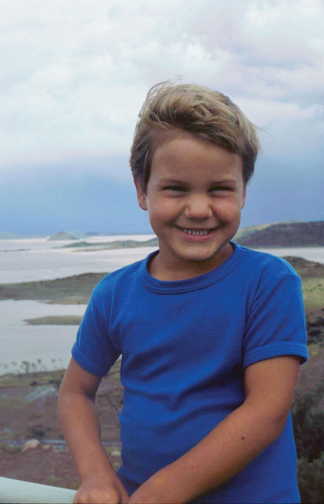
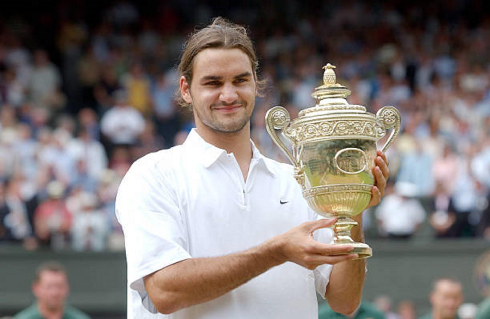
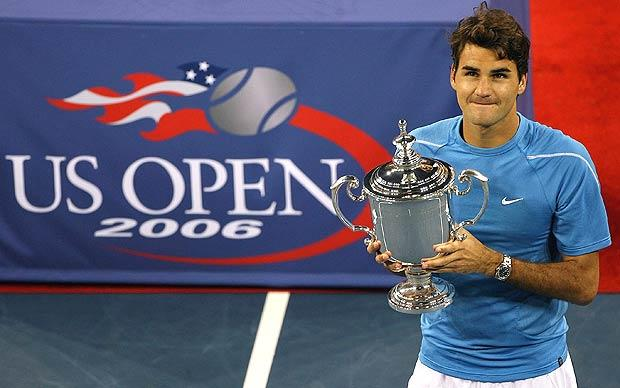

Timeline of Federer Career
FEDERER YOUNG CAREER:
Federer is a professional tennis player who has won 20 Grand Slams and is considered one of the greatest tennis players of all time. This website represents his achievements and are for people who are a big Roger Federer fan. This Website is dedicated to Federer's achievements and a timeline of his career.
Federer, who started playing tennis at age eight, became Switzerland's junior champion when he was 14. In 1998 he captured the Wimbledon junior singles championship and secured the Orange Bowl junior tournament crown in Miami. The following year Federer made his debut on the Swiss Davis Cup team and became the youngest tennis player (at 18 years 4 months) to end the year among the world’s top 100, finishing that season at number 64.
Federer competed at the 2000 Olympic Games in Sydney, advancing to the bronze medal match. The following year at Wimbledon he defeated Pete Sampras to reach the quarterfinals, and by the end of 2002 he was ranked number six in the world. In 2003 Federer won his first Grand Slam tournament title, at Wimbledon. The following year he captured his first Australian Open and his first U.S. Open and defended his Wimbledon title. A gifted shot maker, he was victorious in 11 of the 17 tournaments he played in 2004 and finished the year ranked number one in the world. In 2005 Federer’s numbers were similarly remarkable, as he won 11 of 15 tournaments, including Wimbledon and the U.S. Open. From July 2003 to November 2005 he also won a modern-record 24 straight finals. 
Federer 2006-2007:
In 2006 Federer continued to be the game’s best player. In addition to winning Wimbledon, he was victorious at the Australian Open and the U.S. Open, becoming the first player to win the latter two tournaments three years in a row. He also reached the finals at Roland Garros (the French Open) but was defeated by Rafael Nadal of Spain. In all, Federer competed in 17 tournaments in 2006, capturing 12 titles and reaching the finals in all but one tournament. At the Australian Open in 2007, he won his 10th Grand Slam title. Later that year, however, his bid for his first French Open was again derailed by Nadal, who defeated him in the final. Federer’s rivalry with Nadal continued at Wimbledon in 2007. There he bested Nadal in a thrilling five-set final to become the second male player (after Björn Borg) in more than 100 years to capture five consecutive Wimbledon titles. Federer continued to make history in 2007 when he won his fourth consecutive U.S. Open, a men’s record in the open era.
Federer 2017:
He entered the first Grand Slam tournament of 2017, the Australian Open, as the 17th-ranked men’s player but shocked the tennis world by winning the singles title in an epic five-set final against Nadal. Federer continued his resurgent play at that year’s Wimbledon, where he did not lose a single set during the tournament and won a record-breaking eighth Wimbledon title. Federer’s hot streak continued into 2018 when he won his sixth career Australian Open singles title. With the victory, Federer set a record for most Grand Slam men’s singles titles (20); that mark was later matched by Nadal and Djokovic, and in 2022 the former became the first to surpass it. Federer reached the semifinals at the 2019 French Open and advanced to the final at that year’s Wimbledon, where he lost an epic 4-hour 57-minute match (the longest final match in Wimbledon history) to Djokovic. Because of knee surgeries, Federer missed most of the 2020 and 2021 seasons.

Federer Record list:
Federer records that are most noticeable:
- Second most Grand Slams of all time: 20
- Tied most Grand Slam finals: 30
- Second most weeks as World No. 1: 310
- Most consecutive weeks (male or female) as World No. 1: 237
- Only male player to have won 3 different Slams 5 times (6 AO, 8 Wimbledon, 5 USO)
- Most consecutive Grand Slam finals, semifinals and quarterfinals: 10, 23 and 36 respectively
- Most Wimbledon titles: 8
- Oldest player to be ranked World No. 1 (36 years)
- Most year-end championship titles: 6
- Most matches played on the ATP tour without retiring
- Most consecutive finals won: 24